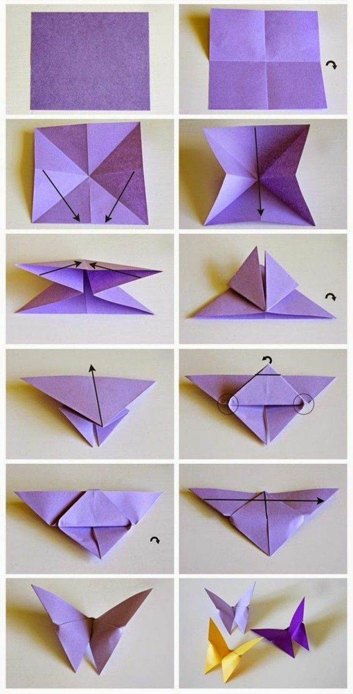

Cara Membuat Origami Kupu - Kupu
Bahan-bahan yang diperlukan:
1.Kertas lipat. Pilih kertas berwarna cerah seperti kuning, merah, jingga, dll, sesuai kreativitas.
2.Lem kertas

1.Siapkan kertas lipat berbentuk persegi. Lipat kertas sama besar dari atas ke bawah dan dari pinggir ke tengah. Buka lipatannya sehingga akan terbentuk empat persegi kecil.
2.Lipat kertas secara diagonal lalu buka lipatan.
3.Tekan bagian tengah kertas ke tengah. Lalu lipat bagian atas dan bawah sehingga berbentuk segitiga.
4.Lipat sudut segitiga ke arah tengah dan putar lalu balikkan kertas.
5.Lipat ujung atas sampai ke bawah. Selipkan ujung kertas ke dalam lipatan.
6.Satukan kedua bagian, lipat dan tekan.
7.Tahan kedua sisi yang sudah dilipat. Jika mau kamu bisa menambahkan lem agar kedua sayap tetap kokoh.
8.Buatlah kertas dalam posisi berdiri layaknya kupu-kupu yang hinggap.
9.Origami kupu-kupu sudah selesai.